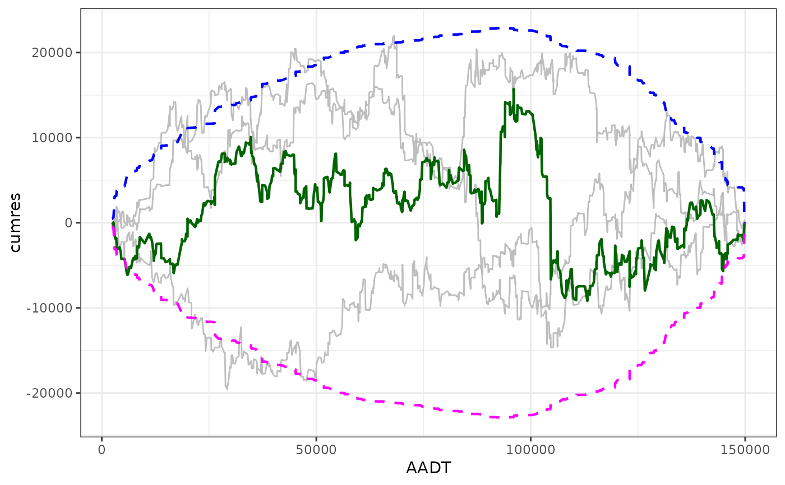

Resample residuals to compute several cumulative residual curves. Receives the covariate values, residuals and number of samples and shuffles (i.e., samples without replacement a vector of the same size) the residuals, and returns a stacked data frame.
Examples
library(cureplots)
library(ggplot2)
## basic example
set.seed(2000)
## Define parameters.
beta <- c(-1, 0.3, 3)
## Simulate independent variables
n <- 900
AADT <- c(runif(n, min = 2000, max = 150000))
nlanes <- sample(x = c(2, 3, 4), size = n, replace = TRUE)
LNAADT <- log(AADT)
## Simulate dependent variable
theta <- exp(beta[1] + beta[2] * LNAADT + beta[3] * nlanes)
y <- rpois(n, theta)
## Fit model
mod <- glm(y ~ LNAADT + nlanes, family = poisson)
## Calculate residuals
res <- residuals(mod, type = "response")
## Calculate CURE plot data
cure_df <- calculate_cure_dataframe(AADT, res)
#> Covariate: AADT
resampled_residuals_tbl <- resample_residuals(AADT, res, n_resamples = 3)
ggplot(data = cure_df) +
aes(AADT, cumres) +
geom_line(
data = resampled_residuals_tbl,
aes(group = sample),
col = "grey"
) +
geom_line(color = "darkgreen", linewidth = 0.8) +
geom_line(
aes(y = lower),
color = "magenta",
linetype = "dashed",
linewidth = 0.8) +
geom_line(
aes(y = upper),
color = "blue",
linetype = "dashed",
linewidth = 0.8) +
theme_bw()
